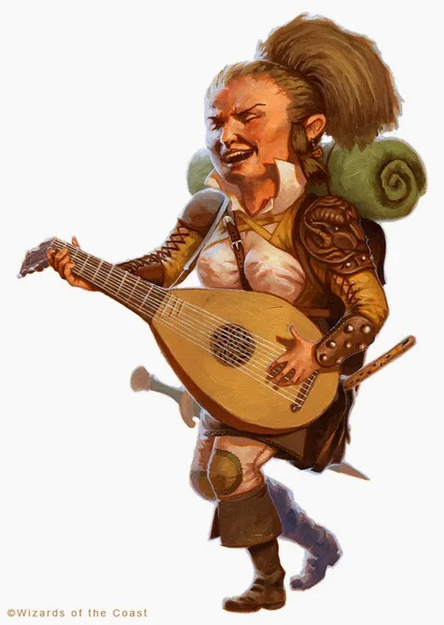
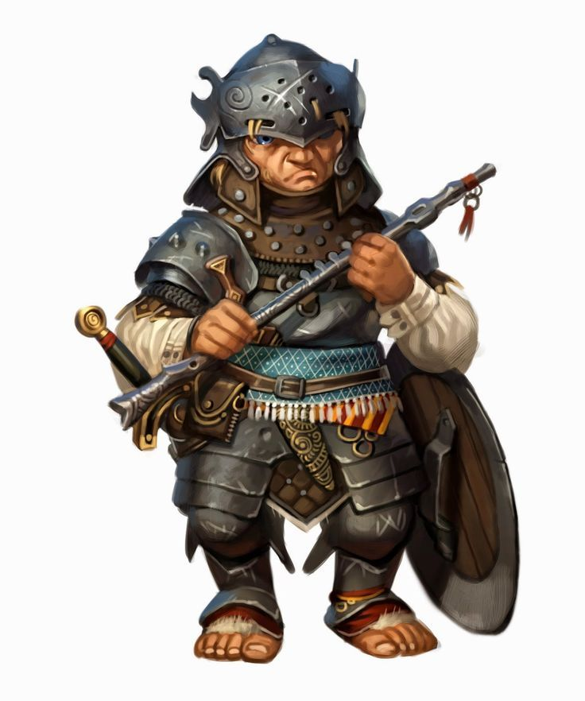

Os confortos de um lar são os objetivos da maioria dos halflings: um lugar para viver em paz e sossego, longe de monstros saqueadores e embates de exércitos, com um fogo aceso e uma refeição generosa, e também uma bebida fina e boa conversa. Embora alguns halflings vivam seus dias em remotas comunidades agrícolas, outros formam bandos nômades que viajam constantemente, atraídos pela estrada afora e o vasto horizonte para descobrir as maravilhas de novas terras e povos. Mas mesmo esses halflings andarilhos amam a paz, a comida, uma lareira e um lar, mesmo que o lar seja em uma carruagem, empurrada ao longo de uma estrada de terra, ou uma balsa flutuando rio abaixo.
Os pequeninos halflings sobrevivem em um mundo cheio de criaturas maiores ao evitar serem notados, ou evitando o combate direto. Com uns 90 centímetros de altura, eles parecem inofensivos e assim conseguiram sobreviver por séculos às sombras dos impérios e à margem de guerras e conflitos políticos. Eles normalmente são robustos, pesando entre 20 kg e 22,5 kg.
A pele dos halflings varia do bronzeado ao pálido com um tom corado, e seu cabelo é geralmente castanho ou castanho claro e ondulado. Eles têm olhos castanhos ou amendoados. Halflings do sexo masculino muitas vezes ostentam costeletas longas, mas barbas são raras entre eles e bigodes são quase inexistentes. Eles gostam de usar roupas simples, confortáveis e práticas, preferindo as cores claras. A praticidade dos halflings se estende para além de suas roupas.
Eles se preocupam com as necessidades básicas e os prazeres simples, e não são inclinados à ostentação. Mesmo o mais rico dos halflings mantém seus tesouros trancados em um porão, em vez de expostos à vista de todos. Eles possuem um talento especial para encontrar a solução mais simples para um problema e têm pouca paciência para indecisões.
Halflings são um povo afável e alegre. Eles apreciam os laços de família e amizade, bem como o conforto do lar e da casa, nutrindo poucos sonhos de ouro e glória. Mesmo os aventureiros que existem entre eles normalmente aventuram-se no mundo por razões de comunidade, amizade, desejo de viajar ou curiosidade. Eles amam descobrir coisas novas, até mesmo as mais simples, tais como uma comida exótica ou um estilo estranho de vestuário.Halflings são facilmente movidos pela piedade e detestam ver qualquer ser vivo sofrer. Eles são generosos, partilhando alegremente o que eles possuem, mesmo em épocas de vacas magras.
Um halfling tem um nome dado a ele, um nome de família e possivelmente um apelido. Os nomes de família muitas vezes são apelidos que, de tão adequados, foram transmitidos através das gerações.
Nomes masculinos adultos: Alton, Ander, Cade, Corrin, Eldon, Errich, Finnan, Garret, Lindal, Lyle, Merric, Milo, Osborn, Perrin, Reed, Roscoe, Wellby.Seu valor de Destreza aumenta em 2.
Um halfling atinge a idade adulta aos 20 anos e pode chegar a 150 anos.
A maioria dos halflings é leal e boa. Via de regra, eles possuem um bom coração e são amáveis, odeiam ver o sofrimento dos outros e não toleram a opressão. Eles também são muito ordeiros e tradicionais, fortemente apegados à sua comunidade e ao conforto de suas antigas tradições.
Halflings medem cerca de 0,90 metro de altura e pesam aproximadamente 20 kg. Seu tamanho é Pequeno.
Seu deslocamento base de caminhada é 7,5 metros.
Quando você obtiver um 1 natural em uma jogada de ataque, teste de habilidade ou teste de resistência, você pode jogar de novo o dado e deve utilizaro novo resultado.
Os dois tipos principais de halflings, Pés-Leves e Robustos, são mais como famílias bem próximas do que verdadeiras sub-raças. Escolha uma destas subraças.
Como um halfling pés-leves, você pode esconder-se facilmente, mesmo usando apenas outras pessoas como cobertura. Você geralmente é afável e se dá muito bem com os outros. Nos Reinos Esquecidos, os halflings pés-leves espalharam-se até os lugares mais distantes e são a variedade mais comum.
Pés-leves são mais propensos à vontade de viajar do que os outros halflings, e muitas vezes vivem ao lado de outras raças ou levam uma vida nômade. No mundo de Greyhawk, estes halflings são chamados pés-peludos ou companheiros altos.
Aumento no valor de habilidade. Seu valor de Carisma aumenta em 1.Um halfling robustos é mais resistente do que a média de sua raça e possui certa resistência aos venenos. Alguns dizem que os robustos têm sangue dos anões. Nos Reinos Esquecidos, esses halflings são chamados de austeros, e são mais comuns no sul.
Aumento no valor de habilidade. Seu valor de Constituição aumenta em 1.|  Pés-leves |
 Robustos |
|---|
Hábeis em encarar um mundo muito maior que eles mesmos, halflings sabem lidar muito bem com medo, por isso um halfling recebe um bônus de +5 em testes de resistência contra medo
Você pode mover-se através do espaço de qualquer criatura que for de um tamanho maior que o seu.
Você pode falar, ler e escrever Comum e Halfling. A linguagem Halfling não é secreta, mas os halflings são relutantes em compartilhá-la com os outros. Eles escrevem muito pouco, por isso eles não possuem uma literatura rica. No entanto, sua tradição oral é muito forte. Quase todos os halflings falam o idioma Comum para conversar com as pessoas das terras que habitam, ou através das quais eles estejam viajando.